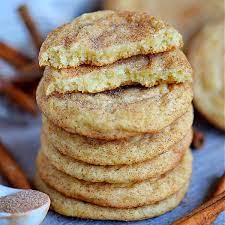

Snickerdoodles

Description
This recipe will be instructing others on how to make delicious Snickerdoodle cookies! Preparation time takes approximately 20 minutes, with 10 minutes of baking time and 5 minutes of cooling. This particular recipe will yield around 36 cookies for enjoyment.
Ingredients
- 1 1/2 cups of white sugar
- 1 cup softened butter
- 2 eggs
- 2 3/4 cups of all-purpose flour
- 2 teaspoons cream of tartar
- 1 teaspoon of baking soda
- 1/4 teaspoon of salt
Coating
- 2 tablespoons of white sugar
- 2 teaspoons of ground cinnamon
Steps
- Preheat oven to 400 degrees F (200 degrees C). Line a baking sheet with parchment paper or lightly grease.
- Beat 1 1/2 cups white sugar, butter, and eggs together in a bowl using an electric mixer until smooth and creamy. Combine flour, cream of tartar, baking soda, and salt in a separate bowl; stir into creamed butter mixture until dough holds together.
- Mix 2 tablespoons white sugar and cinnamon together in a bowl.
- Form dough into 2-teaspoon-size balls and roll in the cinnamon-sugar mixture. Place dough balls, about 2 inches apart, on the prepared baking sheet.
- Bake in the preheated oven on the center rack for 7 minutes. Allow cookies to cool on the baking sheet for 5 minutes before transferring to a wire rack.